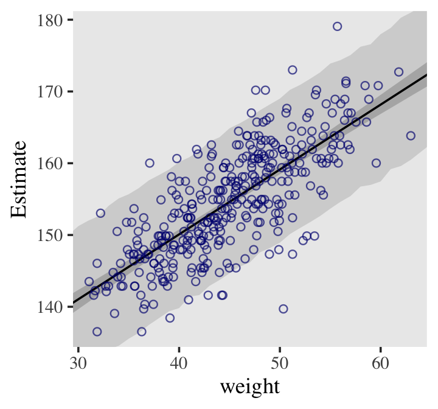

Bayes
Misc
- Prior sensitivity analysis
Correlations Between Parameter Posteriors
Correlated parameters and their uncertainties will co-vary within the posterior distribution
- e.g. High intercepts will often mean high slopes
- Centering/standardization of predictors can remove correlation between parameters
Without independent parameters
- Parameters cant be interpreted independently
- Parameter effects on prediction arent independent
brms::pairs(model_fit)(SR Ch 4)

-
post <- posterior_samples(mod_obj) post %>% select(-lp__ ) %>% ggally::ggpairs()- Ignore first b_; no idea why that got added
- a_cid1 is the intercept for factor variable, cid = 1
- b_cid1 is the slope for the predictor variable, geological ruggedness, when cid = 1
- Slope and intercept conditional on cid = 1 has the highest correlation at 0.174
{kind=link}
Convergence
Metrics
- Misc
- Notes from
- Rank-normalization, folding, and localization: An improved R for assessing convergence of MCMC
- Lots of detailed convergence analysis examples
- Rank-normalization, folding, and localization: An improved R for assessing convergence of MCMC
bayestestR::diagnostic_posteriorhas ESS, Rhat, MCSE- Accepts rstanarm, brms models
- Values potentially indicate multimodal distribution (Vehtari, Thread)
- Chain stacking might help, but would need to know more about the posterior to be more confident on recommendation
- Notes from
- Rhat - Gelman-Rubin convergence diagnostic
- Estimate of the convergence of Markov chains to the target distribution
- Checks if the start and end of each chain explores the same region
- Checks that independent chains explore the same region
- Can require long chains to work well
- ** This diagnostic can fail for more complex models (i.e. bad chains even when value = 1) **
- New metric called R* might be better (docs) but theres arent any guidelines on the values, so probably just useful for model comparison for now.
- Ratio of variances
- As total variance among all chains shrinks to the average variance within chains, R-hat approaches 1
- If converges, Rhat = 1+
- Guideline
- If value is above 1.00, it usually indicates that the chain has not yet converged, and probably you shouldnt trust the samples.
- Solution
- If you draw more iterations, it could be fine, or it could never converge.
- Estimate of the convergence of Markov chains to the target distribution
{kind=link}
Autocorrelation Metrics
Markov chains are typically autocorrelated, so that sequential samples are not entirely independent.
Effects of Autocorrelation
- Can be an indicator of non-convergence
- Increases uncertainty (standard errors)
- When chains have high autocorrelation, they can get stuck in regions of the parameter space making the sampling inefficient.
- I understand this to mean that less of the parameter space gets sampled
Solutions
- If you get warnings, taking more samples usually helps
- Increasing max tree depth helps if max tree depth is continually being reached
MCMCvis::MCMCdiag(fit, round = 2)produces diagnostics and shows sampler settings your model- Accepts rstan, nimble, rjags, jagsUI, R2jags, rstanarm, and brms model objects
Effective Sample Size (ESS)
Measures the amount by which autocorrelation in samples increases uncertainty (standard errors) relative to an independent sample.
- Tells you how many samples the chain would have if there was 0 autocorrelation between samples in the chain
More autocorrelation means fewer effective number of samples.
- Guidelines for all ESS Metrics (tail or bulk)
- Larger is better
- Bad: ESS < 400 indicates convergence problems (Vehtari)
- Okay: ESS 800 corresponds to low relative efficiency of 1% (Vehtari)
- Good: ESS > 1000 is sufficient for stable estimates (Brkner, 2017)
- Very Good: ESS iteration amount
- Greater than means that something called anti-correlation is going on which is good
- Example: 2000 total samples with 1000 of those used for warm-up which is brms default. 4 chains x 1000 samples = 4000 post-warm-up samples. So for each parameter, the ESS should be around that or above
- Guidelines for all ESS Metrics (tail or bulk)
n_eff in {rethinking}
precisoutput- Same as Bulk_ESS
Bulk_ESS - effective sample size around the bulk of the posterior (i.e. around the mean or median) (same as McElreaths n_eff)
assesses how well the center of the distribution is resolved
- i.e. Measures how well HMC sampled the posterior around the bulk of the distribution in order to determine its shape.
Example: Summary will give ESS stats
as_draws_rvars(brms_fit) %>% summarize_draws() variable mean median sd mad q5 q95 rhat ess_bulk ess_tail lp__ -38.56 -38.20 1.30 1.02 -41.09 -37.21 1 1880 2642 alpha_c 9.32 9.32 0.14 0.14 9.09 9.55 1 3364 2436 beta 0.02 0.02 0.01 0.01 0.01 0.03 1 3864 2525 sigma 1.12 1.11 0.10 0.10 0.97 1.29 1 3014 2776Example: Select variable and ESS Values for Quantiles
as_draws_rvars(brms_fit) %>% subset_draws("beta100") %>% summarize_draws(ess_mean, ~ess_quantile(.x, probs = c(0.05, 0.95))) variable ess_mean ess_q5 ess_q95 beta100 3816 2525 3153- These are ESS values for
- The summary estimate (aka point estimate) which is the mean of the posterior in this case
- And the CI values of that summary estimate
- So it makes sense youd have lower numbers of effective samples in the tails of the posterior than in the bulk since its going to get sampled less than the bulk
- These are ESS values for
Tail_ESS - effective sample size in the tails of the posterior
- measures how well HMC sampled the posterior in the tails of the distribution in order to determine their shape.
Autocorrelation plots for chains

post <- posterior_samples(mod_obj) post %>% mcmc_acf(pars = vars(b_a_cid1:sigma), lags = 5) + theme_pomological_fancy(base_family = "Marck Script")- Example from Ch 8,9 Statistical Rethinking
- L-shaped autocorrelation plots like these are good.
- Those are the kinds of shapes youd expect when you have reasonably large effective samples.
Mixing
Posteriors and Trace Plots
brms::plot(mod_obj)Example: Ch 8,9 Statistical Rethinking

- See above for parameter descriptions
- Trace plots with fat, lazy caterpillars like these are good
Trank Plot (Trace Rank Plot)

post <- posterior_samples(b9.1b, add_chain = T) post %>% bayesplot::mcmc_rank_overlay(pars = vars(b_a_cid1:sigma)) + scale_color_pomological() + ggtitle("My custom trank plots") + coord_cartesian(ylim = c(25, NA)) + theme_pomological_fancy(base_family = "Marck Script") + theme(legend.position = c(.95, .2))
Posterior Predictive Check
{kind=link}
{kind=link}
{kind=link}
GOF Plots
Misc
- Also see Statistical Rethinking, Chapter 5 >> Inferential Plots
- Predictor Residual, Counterfactual Plots, and Posterior Predictive Plots
- Also see Statistical Rethinking, Chapter 5 >> Inferential Plots
Data with regression line

# scatter plot of observed pts with the regression line from the model # Defined the by the alpha and beta estimate dat %>% ggplot(aes(x = weight, y = height)) + geom_abline(intercept = fixef(b4.3)[1], slope = fixef(b4.3)[2]) + geom_point(shape = 1, size = 2, color = "royalblue") + theme_bw() + theme(panel.grid = element_blank())Predicted vs Observed with PI and CI around regression line
# x value (weight) range we want for the CI of the line weight_seq <- tibble(weight = seq(from = 25, to = 70, by = 1)) # predicted values (height) for each x value # 95% CIs generated by default mu_summary <- fitted(b4.3, newdata = weight_seq) %>% as_tibble() %>% # let's tack on the `weight` values from `weight_seq` bind_cols(weight_seq) # 95% PIs generated by default pred_height <- predict(b4.3, newdata = weight_seq) %>% as_tibble() %>% bind_cols(weight_seq) # includes regression line, CI, and PI dat %>% ggplot(aes(x = weight)) + # PIs geom_ribbon(data = pred_height, aes(ymin = Q2.5, ymax = Q97.5), fill = "grey83") + # CIs geom_smooth(data = mu_summary, aes(y = Estimate, ymin = Q2.5, ymax = Q97.5), stat = "identity", fill = "grey70", color = "black", alpha = 1, size = 1/2) + geom_point(aes(y = height), color = "navyblue", shape = 1, size = 1.5, alpha = 2/3) + coord_cartesian(xlim = range(d2$weight), ylim = range(d2$height)) + theme(text = element_text(family = "Times"), panel.grid = element_blank())
{kind=link}
Residuals
{DHARMa}
- Vignettes:
- Example:
-
pacman::p_load(brms, DHARMa) model.check <- createDHARMa( simulatedResponse = t(posterior_predict(model)), observedResponse = testdata$observedResponse, fittedPredictedResponse = apply(t(posterior_epred(model)), 1, mean), integerResponse = TRUE) plot(model.check)- Hierarchical dataset fit with a poisson model. Everything is bad in this fit.
-
- Hierarchical dataset fit with a hierarchical negative binomial model.
-
-
plot(model.check, form = testdata$group)- This is hierarchical dataset fit with a hierarchical poisson model. The within-group box-plots show that model has captured the group variance sufficiently as both tests have non-significant (n.s.) results.
Example: Overdispersion
{kind=link}
{kind=link}
{kind=link}
{kind=link}
{kind=link}
Predictive Accuracy
- Misc
- See Statistical Rethinking, Chapter 7 for details
- loo package website has some nice CV workflows
- Also ensembling, time series
- Dont compare models with different numbers of observations (SR, Ch 11)
- e.g. 1/0 logistic regression model vs aggregated logistic regression model
- PSIS-LOO (IS-LOO, WAIC, etc) has difficulties if each observation has their own parameter(s) (aka random effects) (Vehtari thread + post)
- Model Comparison
- McElreath: To judge whether two models are easy to distinguish (i.e. kinda like whether their scores are statistically different), we look at the differences between the model with the best WAIC and the WAICs of the other models along with the standard error of the difference of the WAIC scores
brms::loo_compare(loo_obj, loo_obj)- Where a loo_obj is a
brms::loo(fit)orbrms::waic(fit)object - Can also take a list of loo objects
- simplify = FALSE gives a more detailed summary
- Where a loo_obj is a
- If the difference in ELPD is much larger or several times the estimated standard error of the difference, then the top model is expected to have better predictive performance
- If more than 11 models are compared with
loo_compare, then the median model by elpd is taken as the baseline, and the risk of the difference in predictive performance being due to random noise is estimated.
- McElreath: To judge whether two models are easy to distinguish (i.e. kinda like whether their scores are statistically different), we look at the differences between the model with the best WAIC and the WAICs of the other models along with the standard error of the difference of the WAIC scores
- Pareto-Smoothed Importance Sampling Cross-Validation (PSIS)
- Weights observations based on influence on the posterior
- Uses highly influential observations to formulate a pareto distribution and sample from it
brms::loo- wrappers forloo::loo(docs)- Estimates out-of-sample LOO-CV lppd
- {loo}
- elpd_loo - Larger is better
- looic - is just (-2 * elpd_loo) to convert it to the deviance scale, therefore smaller is better
- May need to use
add_criterion(brms_fit, "loo")in order to use the loo function
- {Rethinking}: Smaller is better
- {loo}
- The shape parameter of the distribution, k, is estimated. When k > 0.5, then the distribution has infinite variance. PSIS weights perform well, in general, as long as k < 0.7. Large k values can be used to identify influential observations (i.e. rare observations/potential outliers).
Guidelines (\(S = \text{Sample Size}\))
- \(k < \min(1 - \frac{1}{\log_{10}(S)}, 0.7)\) \(\rightarrow\) good
- \(\min(1 - \frac{1}{log_{10}(S)}, 0.7) \leq k < 1\) \(\rightarrow\) bad
- \(k > 1\) \(\rightarrow\) very bad
For brms, warnings for high k values will show when using
add_criterion(brms_mod, "loo")Outliers make it tough to estimate out-of-sample accuracy, since rare values are unlikely to be in the new sample. (i.e. overfitting risk)
Also, warnings about high k values can occur when the sample size is small
- When looking at the posterior, keep in mind that influential data values might be significantly affecting the posterior distribution.
Solutions
- If there are only a few outliers, and you are sure to report results both with and without them, dropping outliers might be okay.
- If there are several outliers, then a form of Robust Regression can be used or a Mixture Model.
- Common to use a Students T distribution instead of a Gaussian for the outcome variable specification
- The Student-t distribution arises from a mixture of Gaussian distributions with different variances. If the variances are diverse, then the tails can be quite thick.
- Has an extra shape parameter, , that controls how thick the tails are.
- \(\nu = \infty\) is a Gaussian distribution
- As \(\nu \rightarrow 1+\) , tails start becoming fat
- \(\nu\) can be estimated with very large datasets that have plenty of rare events
- Common to use a Students T distribution instead of a Gaussian for the outcome variable specification
Example
# shows k values for all data points below 0.5 threshold loo::loo(b8.3) %>% plot() # K values tibble(k = b8.3$criteria$loo$diagnostics$pareto_k, row = 1:170) %>% arrange(desc(k)) # k value diagnostic table - shows how many are points have bad k values and that group's min n_eff loo(b8.3) %>% loo::pareto_k_table()
- Widely Applicable Information Criterion (WAIC)
- Deviance with a penalty term based on the variance of the outcome variables observation-level log-probabilities from the posterior
- Estimates out-of-sample deviance
- {loo}:
brms::waic- elpd_waic: Larger is better
- waic: is just (-2 * elpd_waic) to convert it to deviance scale, therefore smaller is better
- May need to use
add_criterion(brms_fit, "waic")in order to use the waic function
- {Rethinking}: Smaller is better
- {loo}:
- Effective number of parameters, pwaic (aka the penalty term or overfitting penalty)
- Says compute the variance in log-probabilities for each observation i, and then sum up these variances to get the total penalty.
- Called such because in ordinary linear regressions the sum of all penalty terms from all points tends to be equal to the number of free parameters in the model
- When the sum is larger than the number of free parameters, it can indicate an outlier is present which will increase the overfitting risk.
- See Solutions for outliers under PSIS >> Shape parameter, k
- Weights
These weights can be a quick way to see how big the differences are among models.
Each model weight is essentially a proportion of its WAIC or PSIS difference compared to the total of all the WAIC or PSIS differences.
- Larger is better
Example
brms::model_weights(b8.1b, b8.2, b8.3, weights = "loo") %>% round(digits = 2) ## b8.1b b8.2 b8.3 ## 0.00 0.03 0.97- Interpretation:
- b8.3 has more than 95% of the model weight. Thats very strong support for including the interaction effect, if prediction is our goal.
- The modicum of weight given to b8.2 suggests that the posterior means for the slopes in b8.3 are a little overfit.
- Interpretation:
- Bayes Factor
- The ratio (or difference when logged) of the average likelihoods (the denominator of bayes theorem) of two models.
- Since the average likelihood has been averaged over the priors, it has a natural penalty for more complex models
- Problems
- Even when priors are weak and have little influence on posterior distributions within models, priors can have a huge impact on comparisons between models.
- Not always possible to compute the average likelihood